Author: Shujing Hu
This project involves reconstructing color images from the digitized Prokudin-Gorskii glass plate negatives. These negatives contain three exposures taken with red, green, and blue filters, and the goal was to align these exposures to create color images.
The simplest approach for smaller images (jpgs) was to perform an exhaustive search within a fixed radius of 20 pixels around the blue channel, which was used as the reference. I used L2, which is to compute the euclidean norm between the blue channel and the shifted green and red channels to find the best alignment.
For larger images (tifs), I used a pyramid search technique to speed up the alignment process. I first scaled down the images multiple times, performed alignment on the smaller versions, and used these shifts as a starting point for alignment at higher resolutions.
In some cases, the alignment did not work perfectly due to distortions in the images or large displacements. I attempted to fine-tune the search radius and used the pyramid method to tackle these issues. However, images with significant rotation or perspective distortion would require more advanced techniques, such as affine transformations or rotation correction, which I have not implemented.
The following images were processed using my alignment algorithm. The calculated offsets for the green (g) and red (r) channels relative to the blue (b) channel are listed below each image.
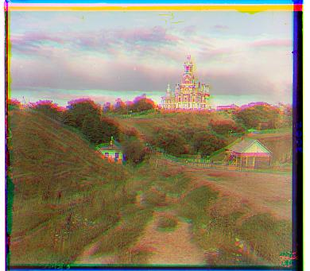cathedral.jpg g: (2, -2) r: (14, -2)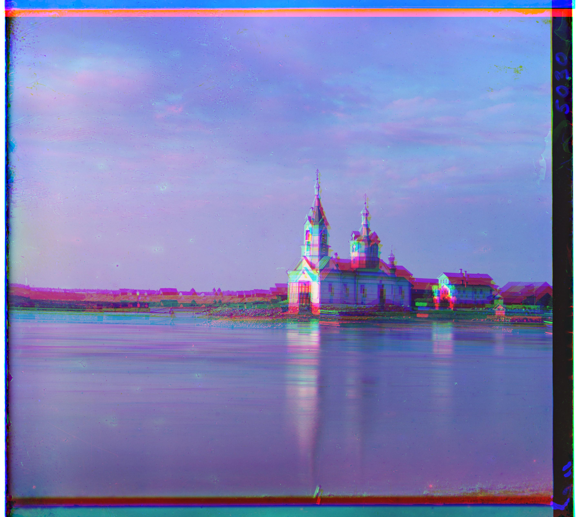
church.jpg g: (0, -12) r: (104, -12)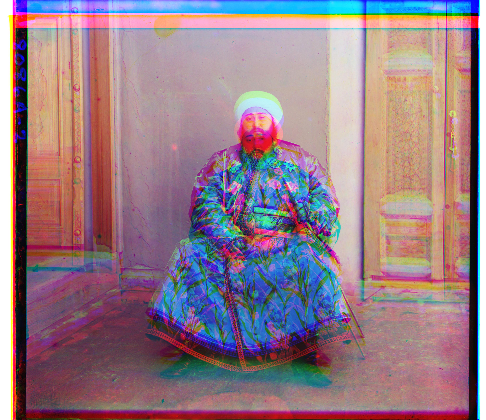
emir.jpg g: (-8, 16) r: (212, 36)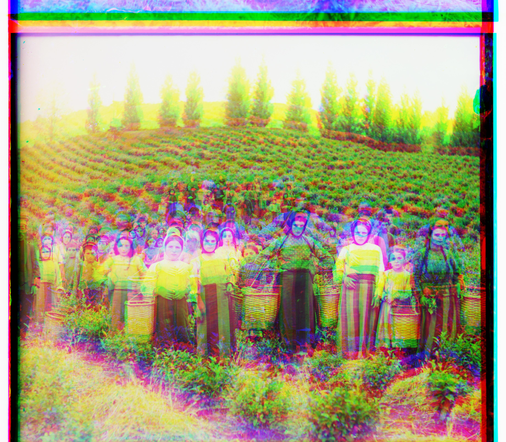
harvesters.jpg g: (236, -8) r: (240, 16)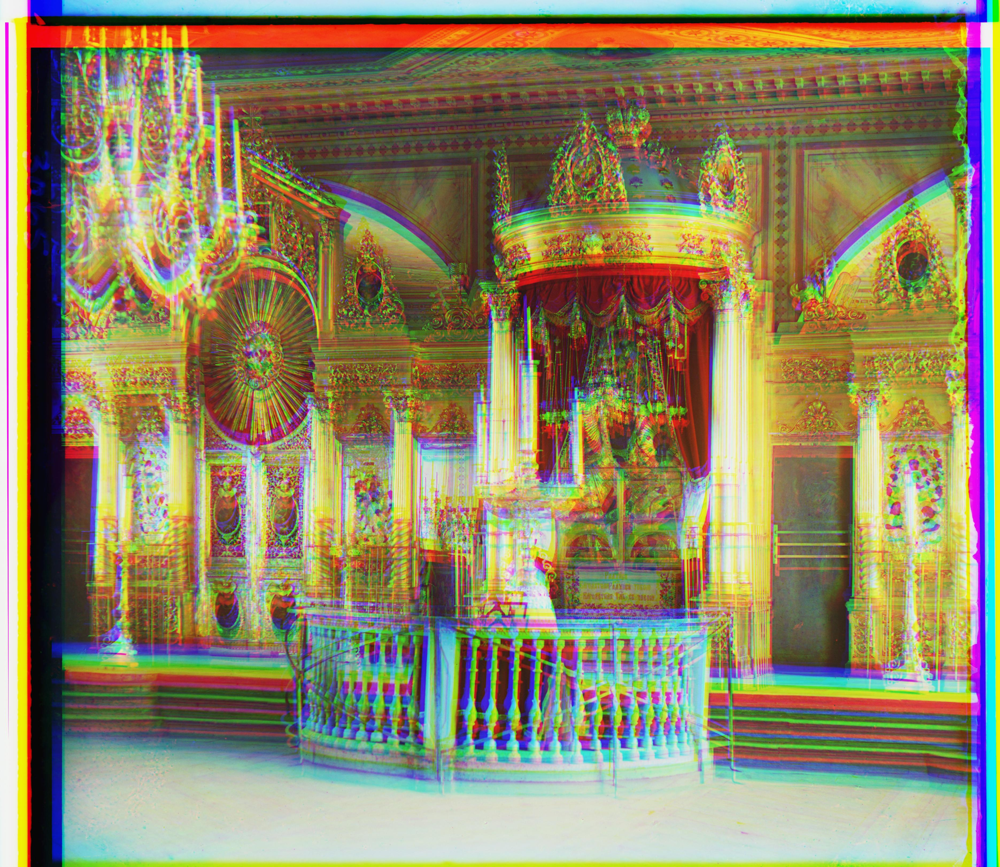
icon.jpg g: (84, 32) r: (180, 44)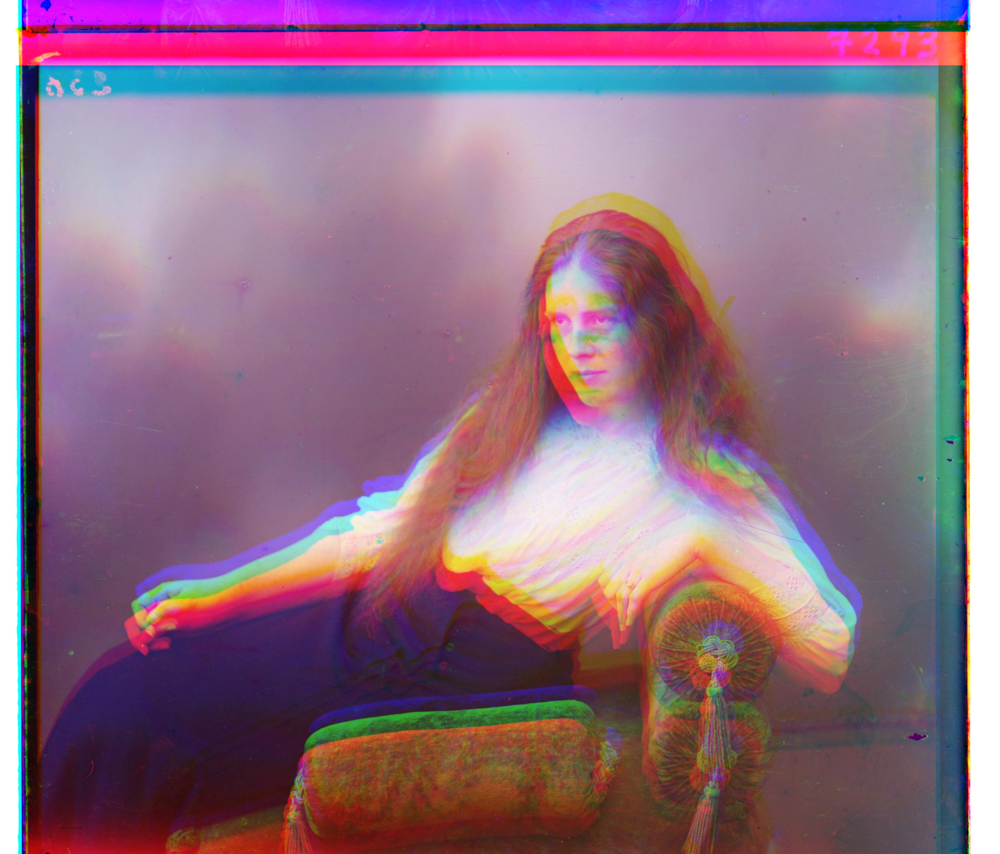
lady.jpg g: (112, -12) r: (244, -32)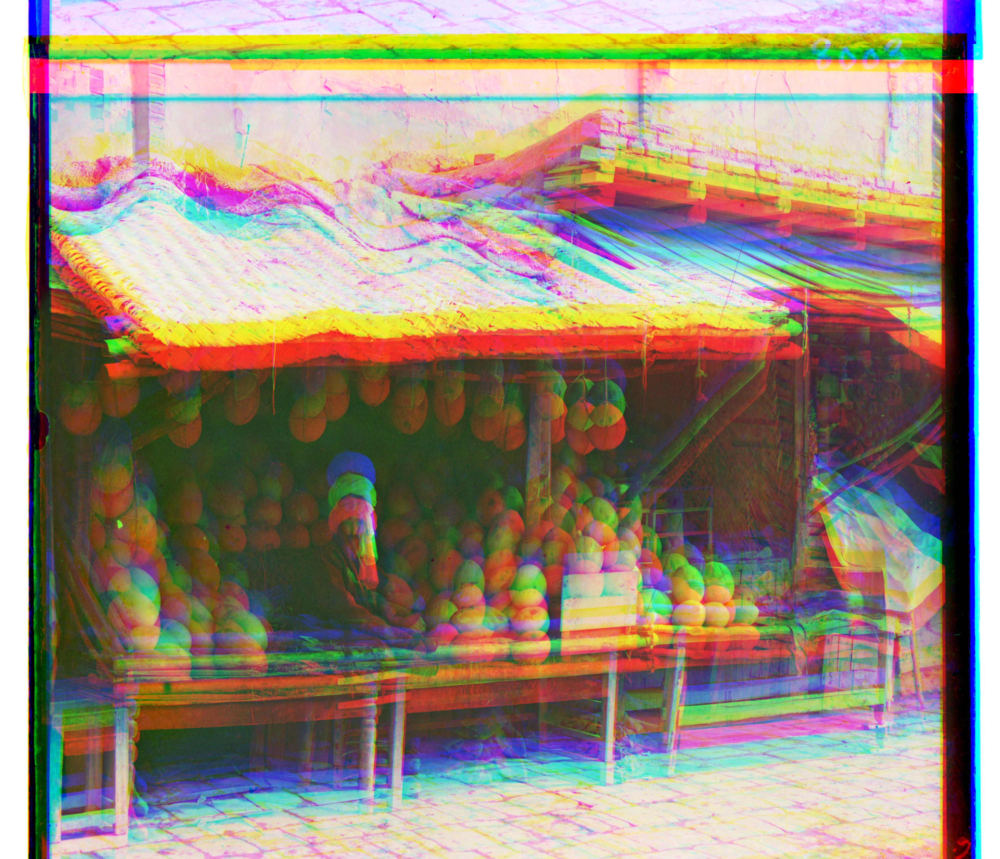
melons.jpg g: (164, 8) r: (352, 16)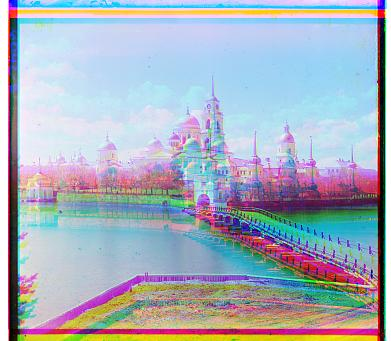
monastery.jpg g: (-12, 0) r: (18, 2)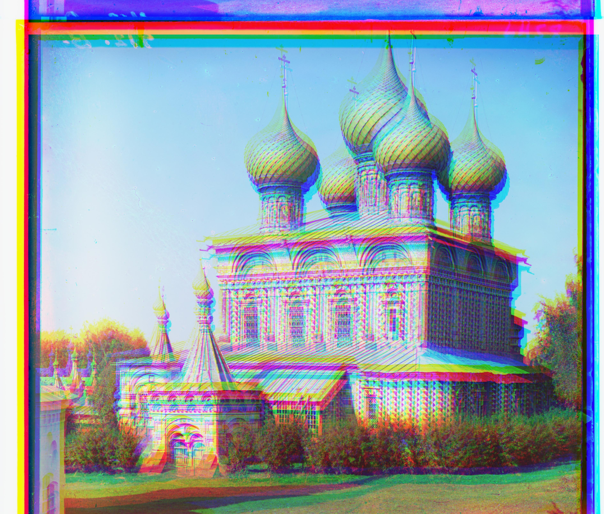
onion_church.jpg g: (104, 44) r: (216, 0)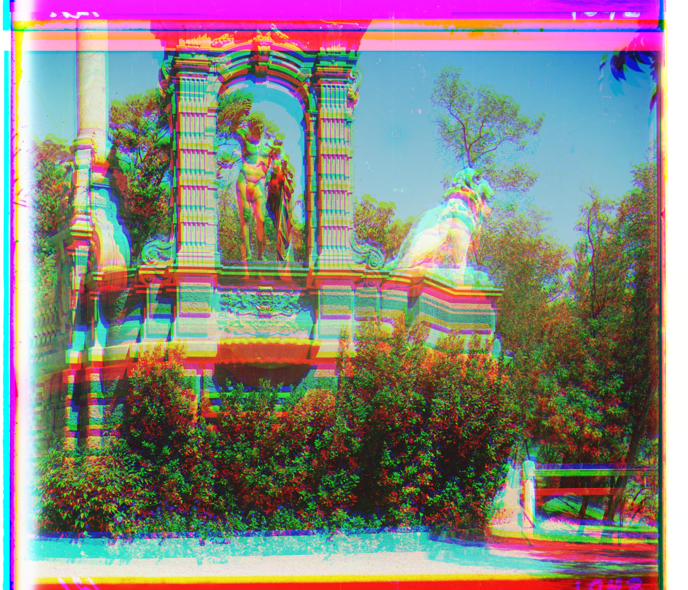
sculpture.jpg g: (64, -20) r: (280, -52)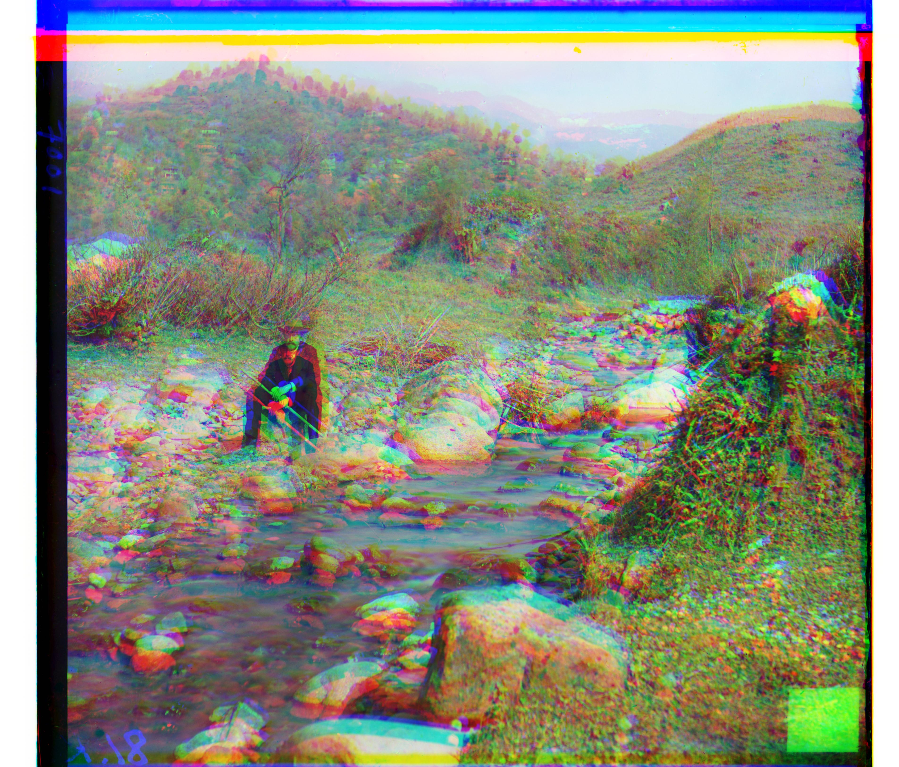
self_portrait.jpg g: (100, -4) r: (260, -8)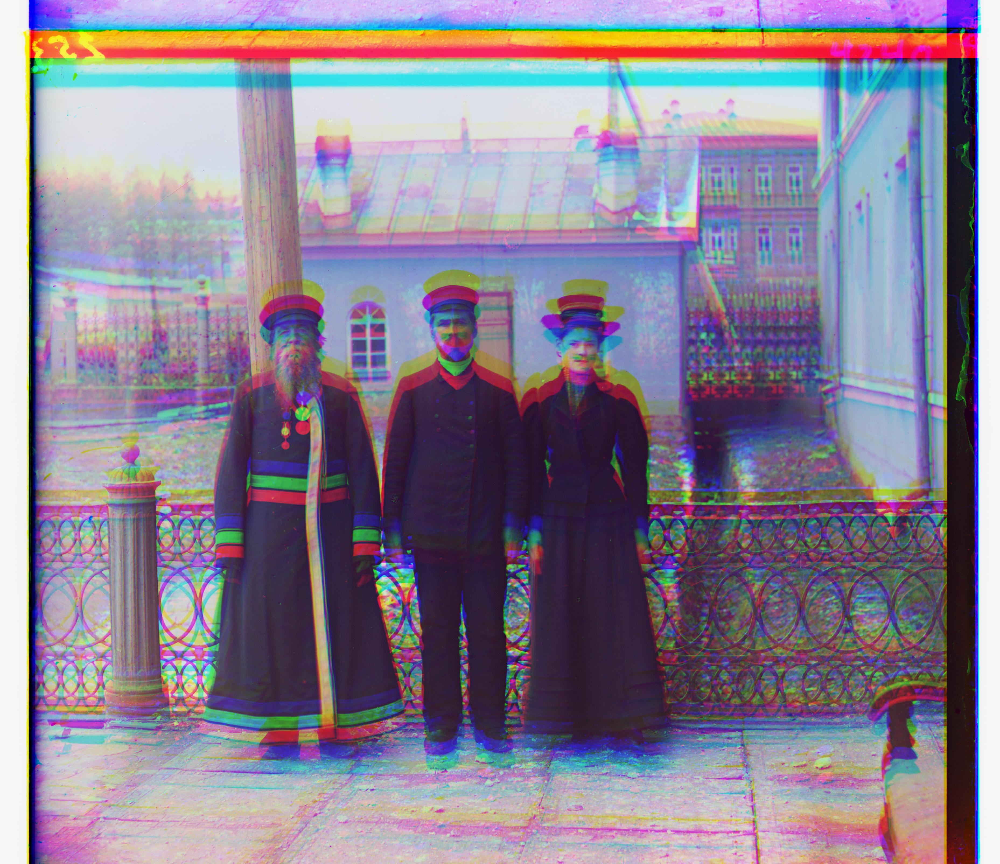
three_generations.jpg g: (104, 8) r: (216, 16)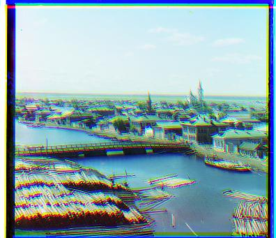
tobolsk.jpg g: (6, 4) r: (12, 6)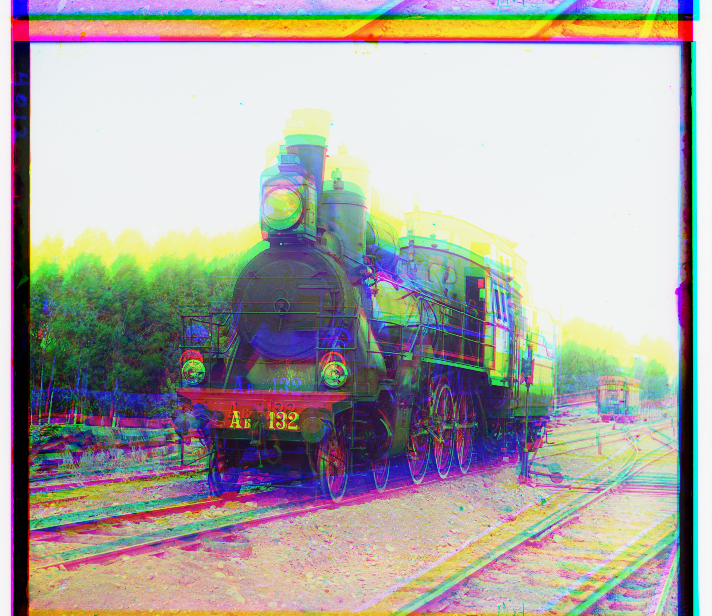
train.jpg g: (220, -16) r: (216, 0)
Here are some additional examples processed using the same algorithm, with the corresponding offsets.
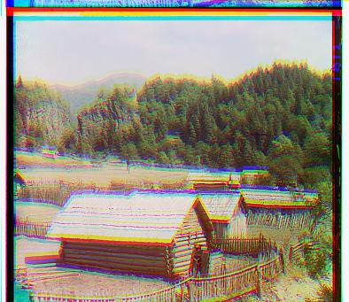sample_house.jpg g: (8, 0) r: (18, 2)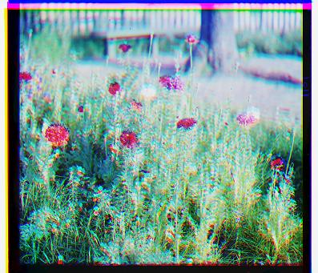
sample_flower.jpg g: (2, 2) r: (12, 2)
I implemented automatic cropping through edge detection. The first and last rows/columns where the variance exceeds the threshold are considered the start and end of the actual image content. The function detect_border_edges crops the image based on these detected edges.
After cropping, the cathedral, monastry, and sample flower images are visually better. I only applied it to jpgs to save time.
Here are some additional examples processed using the same algorithm, with the corresponding offsets.
Cathedral before cropping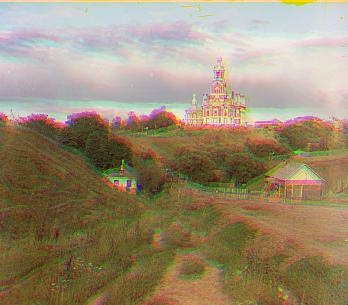
Cathedral after cropping
Monastery before cropping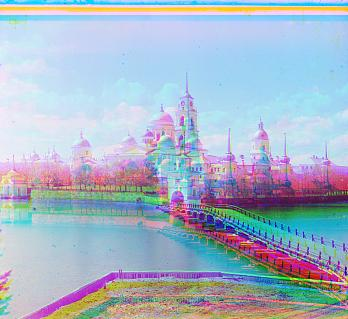
Monastery after cropping4
Sample flowers before cropping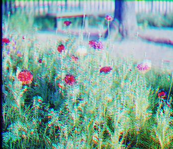
Sample flowers after cropping
Some images did not align perfectly, especially those with complicated details. The current implementation also does not handle perspective corrections or missing colors, which are necessary for aligning certain images more accurately. These issues would require more advanced image transformation techniques, which were outside the scope of this project.